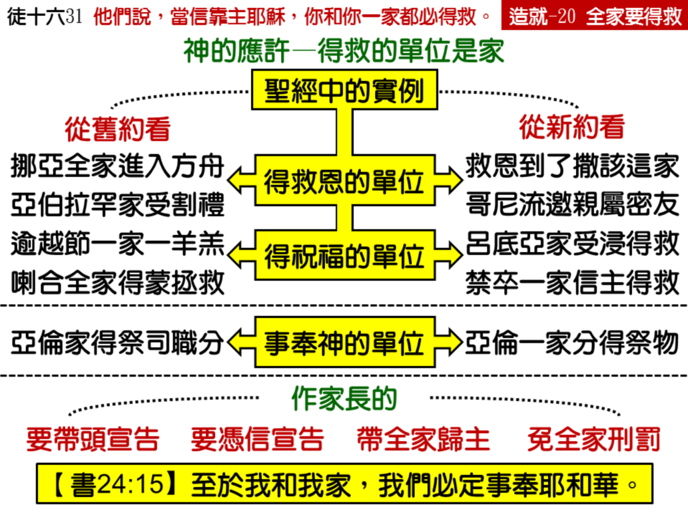

诗歌：补835 首、补 845 首
重要经文：
出埃及记十二章三节、七节：你们告诉以色列全会众说，本月初十日，各人要按着父家取羊羔，一家一只。…各家要取点血，涂在吃羊羔的房屋左右的门框上，和门楣上。
使徒行传十六章三十一节：他们说，当信靠主耶稣，你和你一家都必得救。
约书亚记二十四章十五节下：至于我和我家，我们必定事奉耶和华。
纲目要点：
壹 得救的单位是家——路十九9，徒十2，十六31。
贰 圣经中的实例：
一 旧约：
1 救恩: 全家进入方舟、受割礼、吃逾越节的羊羔、喇合全家得救－创七1，十七 12~13，出十二 3、7，书二 19。
2 事奉: 全家得着祭司的职分－民十九 1，11。
3 祝福: 全家得祝福并欢乐－撒下六 11，申十二7，十四 26。
二 新约：
1 救恩临到全家－路十九 9，约四 53，徒十 2，十六 15，十六31，十八8。
2 祝福临到全家－徒二 39，路十5~6。
叁 神的刑罚也是以家为单位——创十二17，二十18，撒下十二10~11，王上十三34，十六3，二一22。
肆 家长负责在神面前宣告——书二四15下。
伍 要把全家带到主面前来。
信息选读：
得救的单位是家
神所给我们得救的应许，是以一个家当作单位，而不是以一个个人当作单位。这一件事，初信的弟兄姊妹如果一起头就看见，就能够省去许多的难处，同时要得着许多的好处。因为神拯救人，是以家为单位，不是以个人为单位的。 我们有一个盼望，就是在我们中间所生的儿女，不至于到将来还得花工夫去救他们，还得从世界里把他们救回来。有许多人，在肉身上生在我们家里，在属灵上就也得生在我们家里。我们不能一年一年把他们丢掉了，再一年一年把他们救回来。我们不能把他们生到世界上就算了，我们还要把他们带到主面前来。
全家进入方舟
圣经里没有记载挪亚的儿子和媳妇都是义人，圣经只记载挪亚在神面前是一个义人。可是神豫备救恩的时候，神要拯救挪亚的时候，乃是使挪亚全家都进入方舟。所以，进方舟是以家为单位，不是以个人为单位。初信的人，应当把家里所有的人，都带进方舟里去。你可以对主说，“主，我已经相信了你。你说，我一家的人都可以进入方舟。主，现在求你把我全家的人都带进去。”神要尊重你的信心。
全家吃逾越节的羊羔
有一件事是希奇的，就是主耶稣基督所豫备的救恩，也不光是给一个人，乃是像逾越节的羊羔一样，是为着全家的。你一个人去吃，就得着你一个人。你一家去吃，就得着你一家人。得救是全家人得着的。像全家吃羊羔，全家涂血一样，总是一家的人共同接受。所以，求神开我们的眼睛，叫我们看见得救是一家的问题，不是一个人的问题。
神对待人乃是以家为单位
许多的事在旧约和新约里，都是以家为单位。神的儿女，特别作家长的人，在神面前要看见，神对待人乃是以家为单位。你如果不晓得这一个，你不知道要丢了多少东西。你如果是家长，你必须抓住这一件事。你要说，“主，你对我说，你不只是对待我一个人，你是对待我全家的人，所以求你拯救我全家的人。”
不只家长要抓住这件事，就是另外的人也要抓住他的父家来要求。喇合不是家长，她还有父亲。因为喇合抓住神，所以她的父家因着她得祝福，因着她得救。所以，你如果是家长，那是最好的，因为你能够在神面前代表全家说话。你若不是家长，也可以像喇合一样，为着这一个家，在信心里起来说，“主，愿你带领我的一家，使全家都到你面前来，蒙你的恩典，蒙你的祝福。”
传福音要注意全家得救
你们出去传福音，要注意一家一家的得救，不要仅仅盼望一个一个的得救。你们如果真是相信，真是盼望，这一个工作要有大的改变。这完全是看你的信心和盼望如何。你如果盼望一个一个的来，就是一个一个的来。你如果相信一家一家的来，就是一家一家的来。神的救恩是以家为范围的，你不要把这一个范围缩小了。
起头的时候，这一个应许，只是给禁卒一个人，别人没有听见。你相信主耶稣，你和你一家都必得救。后来禁卒把他一家都带来，让保罗对他们说，他们听完就都受浸。然后禁卒领他们上自己的家里去吃饭，他和他全家因着相信了神，都很喜乐。所以，当信主耶稣，你和你一家都必得救，这一件事一点不难。使徒对禁卒一应许，结果就全家都得救。他们个个都听，个个都受浸，个个都喜乐。
如果使徒是对禁卒说，当相信主耶稣，你就必得救。过两天，你得救之后，我们要讲道给你听，叫你明白一些道理，然后你慢慢的向家里的人作见证，叫他们慢慢的相信，慢慢的得救。如果是这样的话，禁卒一家到何时候才能得救？但是使徒传福音不是这样，他不是一个一个的来，他是以家为单位的。他说，“你和你一家都必得救。”你们要在神面前看见，救一个也是救，救一家也是救。千万不要失去了这一个权利。你把全家带来，全家就都得救。
为着全家站起来而免去神的刑罚
当人悖逆神，神动怒施行审判的时候，也是以家为单位。因着一个人，神的刑罚临到一家，正如因着一个人，神的祝福临到一家一样。我们如果看见这一点，我们就得学习，为着我们的家站起来，定规要我们的家归于神。
为着全家宣告使全家归主
圣经里，所有负责的人，大概都是家长。作家长的人，特别在神面前要负一个责任，把自己全家都带来归主，都带来事奉主。你要站在家长的地位上宣告说，我的家要相信主，我的家不能有不信。家长能够替这一个家断定。你可以把约书亚二十四章十五节背出来，在神面前，和全家的人面前说，“至于我，和我家，我们必定事奉耶和华。”从今以后，人必须承认说，这一个家庭是相信主的家庭。你要用信心站在这一个断定上说话，也要让你的妻子儿女站在这一个地位上。
要把全家带到主面前来
我盼望初信的弟兄姊妹看重这一件事。你一得救了，就必须把家里的人都聚集在一起，宣告说，“从今天起，我的家是属乎神的。”他们真的是属乎神的，你要这样宣告；他们还没有属乎神，你也要这样宣告。他们赞成，要这样宣告；他们反对，也要这样宣告。你是家长，必须这样作。同时你要抓住缰绳，我这一个家里的人，必定要事奉神。我告诉你们，当你凭着信心这样站住的时候，这件事就成功。
如果我们所救来的人，是一家一家的来，而不是一个一个的来，这里面的分别不知有多大。我要告诉弟兄姊妹，千万不能放松家庭里的下一代，容让他们信仰自由。全家的得救，是一个最大的原则。你一个人得救，你全家就得救。在这一件事上，你一个人在神面前总得站住，然后你那一个家在神面前就改变。盼望我们注意这一个，这是特别蒙福的。这样作，就把更多的人带到主面前来。
课程复习：
一 神所给我们得救的应许是以何为单位？
二 神对待人是以何为单位？
三 为什么我们传福音时该注意全家？
四 为着我们的家，我们该有怎样的宣告？
五 要把我们的家带到主面前来，谁要先站住？
